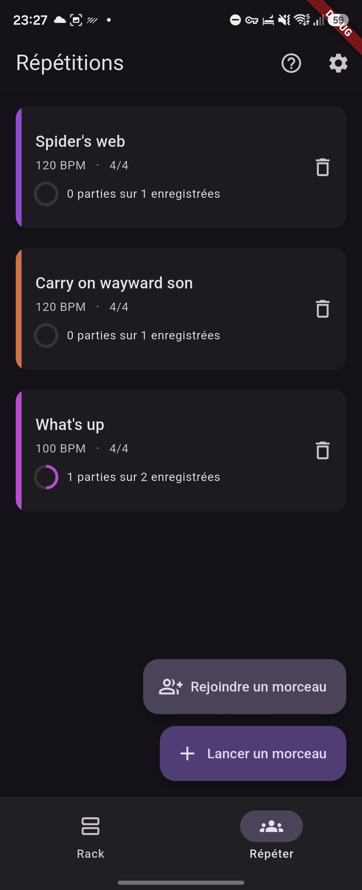
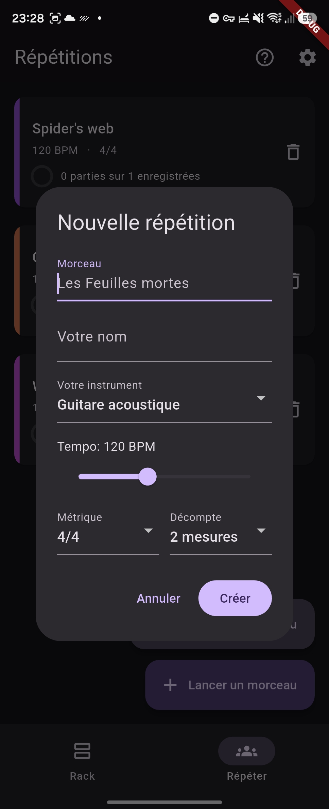
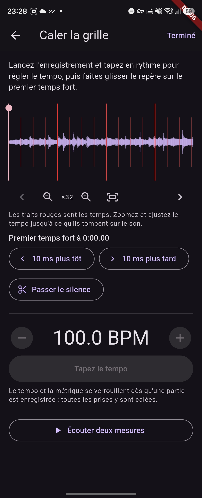
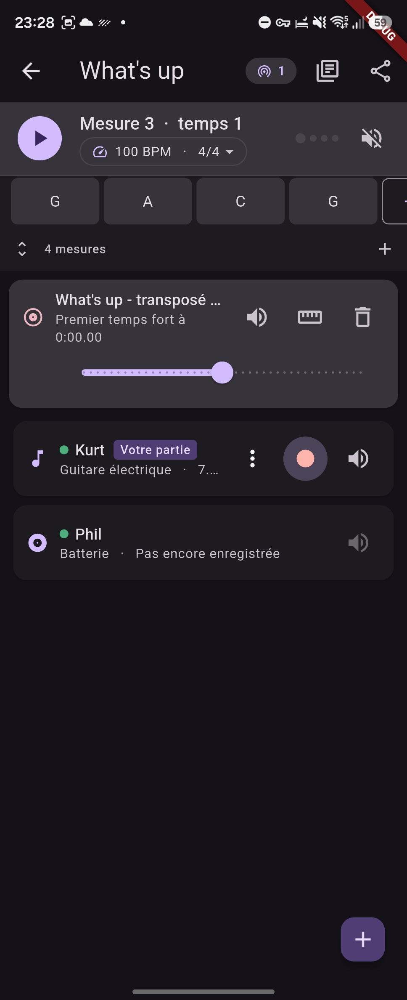
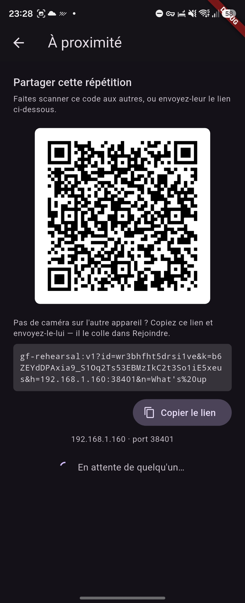

Répétitions
Un groupe travaille un morceau ensemble, avec les téléphones qu'il a déjà. Chacun enregistre sa propre partie sur un clic commun, et les parties se rassemblent en un arrangement dont chaque appareil garde une copie complète.

Comment se déroule une répétition
Lancez un morceau, donnez-lui un tempo et une mesure, puis ajoutez une piste pour votre instrument. Appuyez sur enregistrer : un décompte passe d'abord, puis vous jouez sur ce qui est déjà là. Votre partie rejoint le mixage, et le suivant enregistre la sienne par-dessus.
Vous enregistrez vos parties et celles de personne d'autre. Les vôtres, vous pouvez les refaire ou les supprimer autant que vous voulez — une prise vous appartient tant qu'elle ne vous convient pas.

Des prises qui tombent sur le temps
Chaque appareil met un instant à sortir le son et un autre à le capter. Ensemble, ce retard placerait chaque prise derrière le temps d'environ trente millisecondes sur un téléphone, et bien davantage en Bluetooth — assez pour s'entendre, et assez pour gâcher un empilement de parties.
GrooveForge mesure cet aller-retour sur l'appareil lui-même : il joue un bref balayage de fréquences et le retrouve dans le signal du micro par corrélation. Chaque prise est ensuite recalée d'exactement cette durée : ce que vous avez joué sur le temps tombe sur le temps.
La mesure est retenue par sortie, car le retard appartient au matériel et non au morceau : le haut-parleur du téléphone, un casque filaire et chaque casque Bluetooth gardent leur propre valeur, et l'application le signale quand vous portez un casque qu'elle n'a jamais mesuré.
Jouer sur un enregistrement
Importez le morceau à travailler — MP3, FLAC et WAV partout, plus M4A, AAC et la bande-son d'une vidéo sur Android. Tapez la pulsation pour donner le tempo, puis amenez un repère sur le premier temps fort afin d'aligner la grille sur la musique. Zoomez dans la forme d'onde, faites-la défiler, et vérifiez le tempo contre des traits rouges tracés sur chaque temps : un tempo faux d'un dixième est inaudible sur deux mesures et flagrant au bout de trente.
Le clic se coupe tout seul dès qu'un enregistrement est là : c'est lui qui donne le tempo, désormais.

Vitesse de travail
Ralentissez tout le morceau à 50 % pour bosser un passage. Les enregistrements sont étirés dans le temps plutôt que joués plus lentement : rien ne descend en hauteur — une partie de guitare à 70 % se retrouverait sinon trois demi-tons plus bas, et deviendrait injouable.
La vitesse de travail est propre à votre appareil. Celui qui travaille une mesure difficile à mi-vitesse n'entraîne pas le reste du groupe avec lui.
Accords et partitions
Écrivez la forme du morceau sur une grille d'accords, mesure par mesure, de un à quatre
accords par mesure, la mesure en cours allumée. Réduite à une seule ligne, elle défile toute seule pendant
que vous jouez. Les chiffrages sont réellement analysés et non simplement stockés comme du texte :
Ab, C#m7, Gm7b5, C6/9, Am(M7)/B se résolvent
tous en une fondamentale, un accord de base et un jeu complet d'intervalles.
Chaque morceau porte aussi un classeur de partitions partagé : ajoutez un PDF, une grille ou la photo d'une page, et tout le groupe en reçoit une copie. Les scans s'ouvrent en plein écran et se zooment.

Partager, sans serveur ni compte
Les parties passent directement d'un appareil à l'autre par le réseau local, chiffrées. Montrez un QR code une fois, ou envoyez un lien ; ensuite les appareils se retrouvent tout seuls et il suffit d'ouvrir le même morceau.
Il n'y a ni hôte ni autorité. La fusion est symétrique et sans conflit : deux appareils qui se rencontrent convergent vers le même arrangement, dans n'importe quel ordre, et celui qui était absent rattrape son retard dès qu'il réapparaît. Rien n'est envoyé nulle part — aucun service ne pourrait le recevoir, et aucun n'est nécessaire.
Une pastille sur chaque piste indique si le musicien qui la possède est connecté, et une prise qui n'a pas encore atteint tous les appareils présents est signalée, pour que personne ne remballe en plein transfert.

Quand la salle n'a pas de Wi-Fi
Tout le monde doit être sur le même réseau, et des téléphones en données mobiles ne peuvent pas se voir. Les salles de répétition ont rarement un Wi-Fi utilisable : une personne active alors le point d'accès de son téléphone et les autres s'y connectent — la répétition elle-même ne consomme aucune donnée mobile, puisque rien ne sort de la salle. Ce n'est pas forcément toujours la même personne.